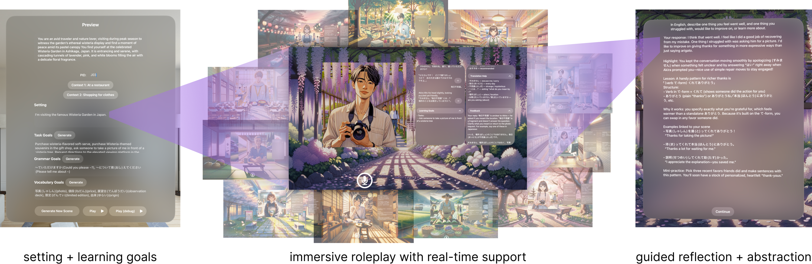
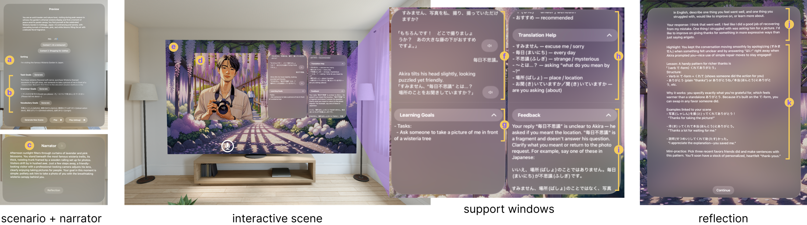

GELLI
A Generator for Experiential Language Learning Interactions
GELLI generates narrative language-practice worlds from a learner’s goals. Learners converse with generated characters, use language support as they explore, and reflect on the experience in mixed reality.
Generative AI · Language learning · Mixed reality · Apple Vision Pro

Research question
Learning a language takes practice across many situations. The ones a learner cares about may be difficult to access, intimidating, or absent from a course’s prepared materials.
Authoring a useful practice experience usually means designing its setting, characters, dialogue, and learning opportunities ahead of time. We asked how a system could generate those experiences around whatever goals a learner brings, while giving them room to steer the conversation.
System
Setting and learning goals
The learner specifies a situation and goals for practice. GELLI generates scenes and characters that create opportunities to use the target language.
Conversation and language support
Illustrated environments, character imagery, voiced narration, and dialogue establish a world to imagine and act within. Support windows offer language suggestions, translation help, and corrective feedback alongside the roleplay.
Reflection
After a scene, learners reflect on how it went. GELLI responds with feedback grounded in their reflection and conversation transcript, then generates a new scene around remaining goals.

Study and findings
We studied GELLI with 43 learners of Japanese, including a controlled, within-subjects comparison with 40 participants. Compared with expert-authored videos targeting the same goals on the same headset, GELLI produced greater immediate vocabulary recall and confidence. Speaking performance improved in both conditions, with no significant difference between them.
Agency through authoring
Learners valued creating experiences for both preparation and play. Remembered conversations and imagined situations became practice they could influence through their own choices.
Immersion through imagination
Learners described making an effort to imagine themselves in the scenario. Images, narration, character behavior, and personal memories supported that engagement; consistency with their expectations mattered.
Discovery and experimentation
Language support helped learners attempt responses they might otherwise avoid. Suggestions and unexpected narrative developments introduced new language and possibilities to explore beyond their original plans.

Future directions
This work motivates my interest in how authoring, reviewing, and replaying simulations could help people understand and direct their learning over time.
I’m exploring how these activities could extend across domains, and what multimodal interfaces would need to make them useful. Whether the agency available during practice develops into greater learner autonomy is a question for future study.
Paper
GELLI: A Generator for Experiential Language Learning Interactions
arXiv preprint, 2026